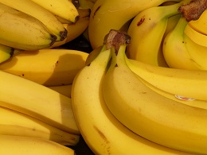

Miért fogyasszunk sok gyümölcsöt?
A zöldségek és a gyümölcsök nagyon fontos szerepet töltenek be az egészségünk
megőrzésében. Nagyon
sok vitamint, ásványi anyagot és antioxidánst tartalmaznak, amelyek felveszik a harcot a szabad
gyökökkel szemben. A szabad gyökökről azt tartják, hogy számos betegség kialakulásáért felelősek,
például a különböző szívbetegségek, a cukorbetegség és a rák.

A banán
A banán (Musa x paradisiaca) a trópusokon elterjedt és termesztett egyszikű, lágy szárú,
bár gyakran fatermetű növény. Levelei egymásra borulva 3–5 méter magas áltörzset alakítanak ki.
Lecsüngő, összetett fürtvirágzata van. Évente 50–70 kg keményítőben gazdag, utóérő gyümölcsöt hoz
(tulajdonképpen áltermés). Termése bogyótermés. Az átlagosan 10–15 cm hosszú, hajlott, sokszögletes,
lekerekített, zöldessárga gyümölcsök közös száron helyezkednek el. A világ legnagyobb banánexportőre ma
Ecuador.
Fogyasztása
Jellegzetes zamatú húsát vagy frissen fogyasztják, vagy szárítva (liszt, pehely) kerül
forgalomba. Mivel a gyümölcs (valójában lágy szárú növény) könnyen emészthető, ezért kisbabáknak is
adható, a gyomorból 110 perc alatt kiürül. Ajánlható gyomorfekélyben szenvedőknek, ugyanis az
orvostudomány gyógyhatásúnak tartja. A-, U-, E-vitamint, vasat, rezet, jódot, mangánt és foszfort
tartalmaz. Jelentős szénhidrát tartalma miatt fogyókúrázóknak nem ajánlott. A magyar weboldalakon és
táplálkozási tanácsadókban kalcium tartalmáról gyakran 110 mg / 100 g adat szerepel, ami sokkal nagyobb,
mint amit a külföldi adatbázisokban olvashatunk. Dr. Bíró György úr megerősítette, hogy az adat tévesen
szerepelt a Bíró-Lindner Tápanyagtáblázat című könyvben. Ennek megfelelően, a tej kalciumtartalmának
pótlására, vagy a csontritkulás kezelésére a banán nem ajánlható, az ilyen jellegű közlések tévesek
lehetnek.